Dành riêng cho Geely EX2 · Việt Nam
Làm màn hình EX2 của bạn tiện hơn mỗi ngày
Điều khiển cửa, kính, cốp, điều hòa, chế độ lái và sạc chỉ bằng một chạm. Kho app giải trí, dẫn đường, camera gương khi rẽ, điều khiển xe từ xa bằng app điện thoại XC Connect — gom hết vào một ứng dụng tiếng Việt.
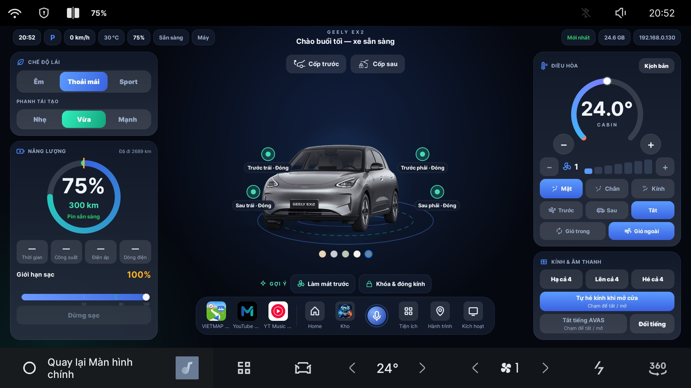
Những điểm mới trong các bản gần đây
Bảng xe trên màn chia
Màn chia kèm tốc độ, pin, chế độ lái và hai app. Mở bằng biểu tượng xe trên thanh bar, có thể đặt làm màn hình chính khi bấm nút Home.
Toàn màn, Đổi app, Tắt chia
Trên màn chia: phóng một app ra toàn màn, đổi chỗ hai app hoặc tắt chia chỉ với một chạm.
Gửi điểm đến từ Google Maps
Chia sẻ địa điểm từ điện thoại, màn hình xe mở bản đồ và dẫn đường tới đó.
Báo sạc kèm số liệu
Thông báo sạc xong về XC Connect kèm tiền điện, số kWh và thời gian sạc. Một xe ghép được tối đa 3 điện thoại.
Chỉ cần nhắn một tin
Việc cài đặt được hướng dẫn riêng qua Zalo, để đúng với phiên bản phần mềm trên xe của bạn.
Nhắn qua Zalo
Vào nhóm Xe Chơi, cho biết bạn dùng EX2 bản nào.
Được hướng dẫn từng bước
Làm theo hướng dẫn để kết nối và cài app lên màn hình xe, có người hỗ trợ khi cần.
Dùng & nhận cập nhật
Bản mới được gửi thẳng lên xe, không cần cắm máy tính.
Mọi nút hay dùng, trên một màn hình
Không phải lục từng menu của xe. Mở app là thấy trạng thái cửa, cốp, kính và điều khiển ngay.
Cửa, cốp, kính — nhìn là biết
- Xem từng cửa đang mở hay đóng, hiện ngay trên hình xe
- Mở / đóng cốp trước và cốp sau
- Hạ, lên, hé kính từng cửa hoặc cả bốn cửa
- Tự hé kính khi mở cửa
- Tắt tiếng hoặc đổi tiếng cảnh báo người đi bộ (AVAS)
- Đổi màu xe trên màn hình cho giống xe của bạn
- Gợi ý nhanh: “Làm mát trước”, “Khóa & đóng kính”
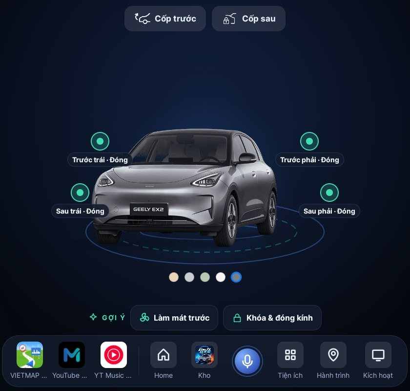
Màn hình chính thật trên xe: cửa, cốp, gợi ý nhanh và hàng app.
Chế độ lái & phanh tái tạo
Chọn một lần, xe nhớ cả khi tắt máy. Chuyển nhanh bằng nút trên màn hình, giọng nói hoặc phím mũi tên trên vô lăng.
- Chế độ lái: Êm / Thoải mái / Sport
- Phanh tái tạo: Nhẹ / Vừa / Mạnh
- Gán phím mũi tên vô lăng: chuyển bài, chế độ lái, phanh tái sinh, quạt
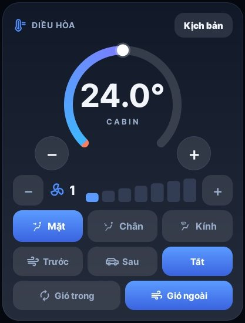
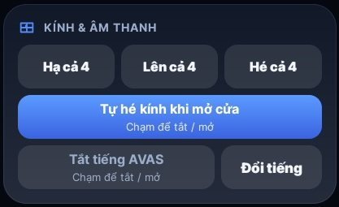
Chỉnh nhiệt độ, quạt, hướng gió — ngay trên màn hình chính
- Nhiệt độ và tốc độ quạt, bấm + / −
- Hướng gió: mặt, chân, kính
- Gió trong / gió ngoài, sấy kính trước và sau
- Nhiệt độ hiển thị dạng số ngay trên thanh điều hòa của xe
- “Làm mát trước” trước khi bạn lên xe
- Bốn kịch bản có sẵn, chạm một lần là xong
Chạm một lần, điều hòa tự đặt đúng thông số
- Làm mát nhanh: 16°C, quạt mạnh, làm lạnh nhanh
- Chạy êm: 24,5°C, quạt nhẹ, đỡ tốn điện
- Sấy kính mưa: 26°C, quạt mạnh, hết mờ kính
- Giữ cabin thoáng: 23,5°C, quạt vừa, cabin thoáng
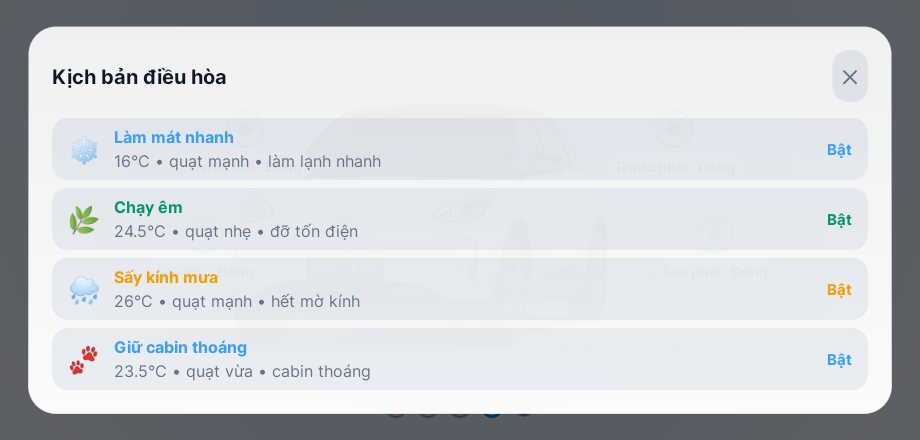
Biết rõ xe đang tốn bao nhiêu điện
Pin, tầm đi, giới hạn sạc, sổ sạc và hành trình được ghi tự động — xem lại theo 7 ngày, 30 ngày hoặc 3 tháng.
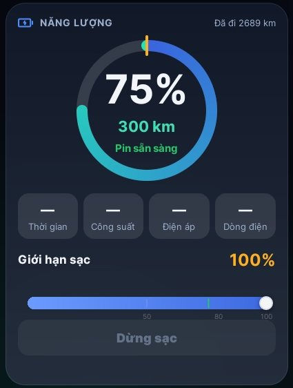
Pin, tầm đi và giới hạn sạc
- % pin, số km còn đi được, trạng thái sạc
- Đặt giới hạn sạc và dừng sạc ngay trên màn hình
- Hiện % pin trên thanh trạng thái cạnh biểu tượng Wi‑Fi
- Tìm trụ sạc trong bán kính 20 km (EV HUB), lọc theo hãng bạn đã nạp tiền
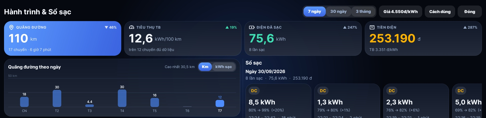
Hành trình & Sổ sạc: km, kWh/100 km, điện đã sạc và tiền điện của từng lần cắm sạc.
Thêm những thứ màn hình gốc còn thiếu
Chia hai màn hình & Bảng xe
Bản đồ một bên, nhạc hoặc video một bên, thông tin xe ngay bên dưới. Không cần chuyển qua lại giữa các màn hình khi đang lái.
- Tốc độ, số P R N D, % pin và quãng đường còn đi
- Chuyến trước: thời gian, quãng đường, mức tiêu thụ
- Chế độ lái và phanh tái tạo ngay trên màn chia
- Điều khiển nhanh: mát nhanh, sấy kính, hé kính, cốp trước, cốp sau
- Đổi chỗ hai app, phóng một app ra toàn màn hoặc tắt chia chỉ với một chạm
- Mở bằng biểu tượng xe trên thanh bar, hoặc đặt làm màn hình chính
- Nút nổi trên màn Home hoặc trên mọi app, 3 ô mở app nhanh
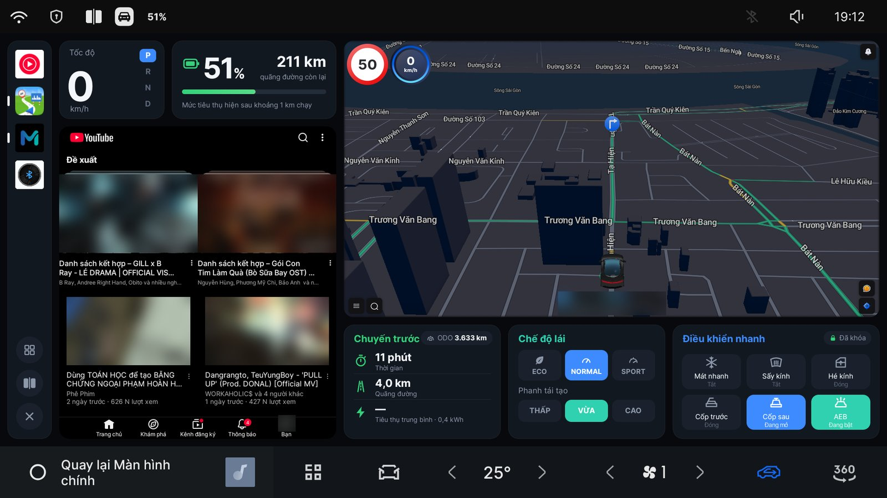
Ảnh chụp trên xe: bản đồ, YouTube và bảng xe trên cùng một màn hình.
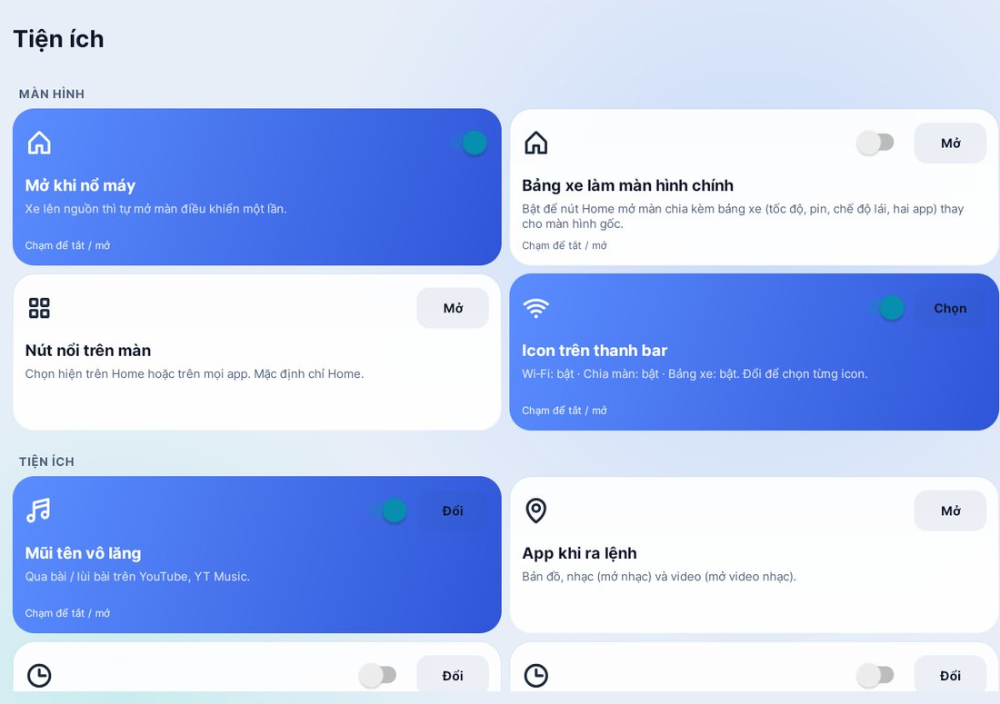
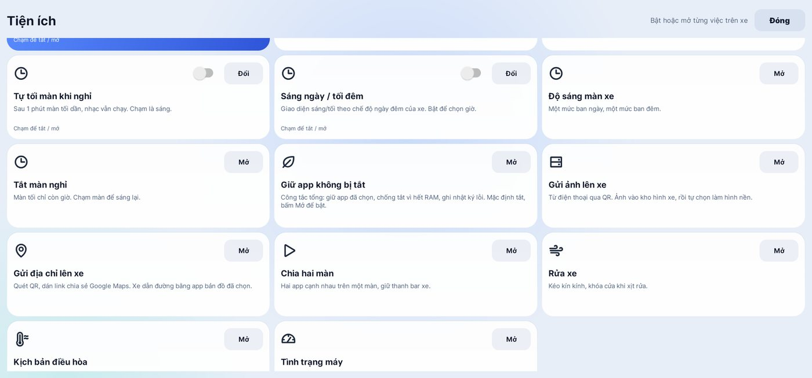
Màn hình Tiện ích thật trên xe: mỗi việc một thẻ.
Tiện ích bật tắt từng việc một
Mỗi tiện ích là một thẻ: chạm để bật hoặc tắt, không cần vào menu sâu.
- Tự mở màn điều khiển khi xe nổ máy
- Bảng xe làm màn hình chính: nút Home mở màn chia kèm tốc độ, pin, chế độ lái
- Giao diện sáng / tối theo chế độ ngày đêm của xe, hoặc theo giờ tự chọn
- Độ sáng màn ban ngày và ban đêm riêng
- Tự tối màn khi nghỉ, nhạc vẫn chạy; hoặc tắt màn hẳn chỉ còn giờ
- Giữ app không bị xe tự tắt, tự bắt Wi‑Fi
- Chọn icon hiện trên thanh bar: Wi‑Fi, chia màn, bảng xe
- Rửa xe: kéo kín kính, khóa cửa khi xịt rửa
- Tình trạng máy: máy có nặng không, nóng không, mạng ra sao
Bật xi nhan, thấy ngay điểm mù
Rẽ trái hay phải, camera gương bên đó tự hiện lên màn hình — chỉ phần bánh sau, đủ để quan sát mà không che bản đồ.
- Trái / phải tự đổi theo xi nhan
- Không tự bật khi bật cảnh báo nguy hiểm (hazard)
- Camera lùi nền tối, đỡ chói ban đêm bản Pro
Ra lệnh bằng tiếng Việt, tay không rời vô lăng
Bấm phím thoại trên vô lăng, nghe tiếng “ting” rồi nói tự nhiên. Có sóng âm trên thanh bar để biết xe đang nghe.
- Hiểu tiếng Việt và tiếng Anh qua Google (cần Wi‑Fi)
- Hiểu câu nói tự nhiên, phản hồi nhanh
- Mũi tên vô lăng chuyển bài cả trên YouTube và YT Music
XC Connect — xe của bạn, ngay trong lòng bàn tay
App cho iPhone và Android đi kèm phần mềm trên màn hình xe: xem và điều khiển xe từ bất cứ đâu có mạng.
- Xem pin, quãng đường còn đi, trạng thái khóa, cửa và cốp
- Bật điều hòa, chỉnh nhiệt độ và quạt trước khi lên xe
- Mở cốp, hạ kính, điều khiển nhạc, gửi điểm đến cho xe
- Hành trình, sổ sạc, tìm xe trên bản đồ, thông báo khi sạc xong
- Widget và thẻ sạc trên màn hình khóa, ra lệnh bằng Siri, gửi điểm đến từ Google Maps
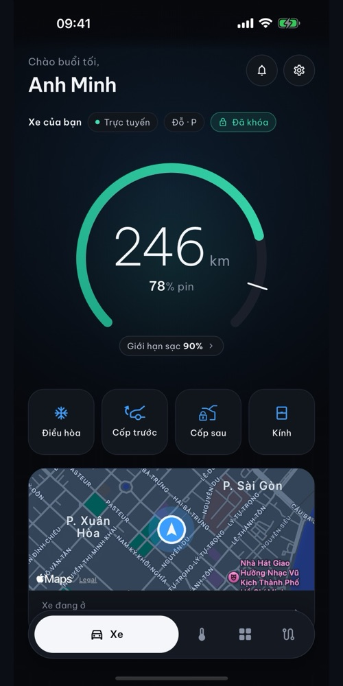
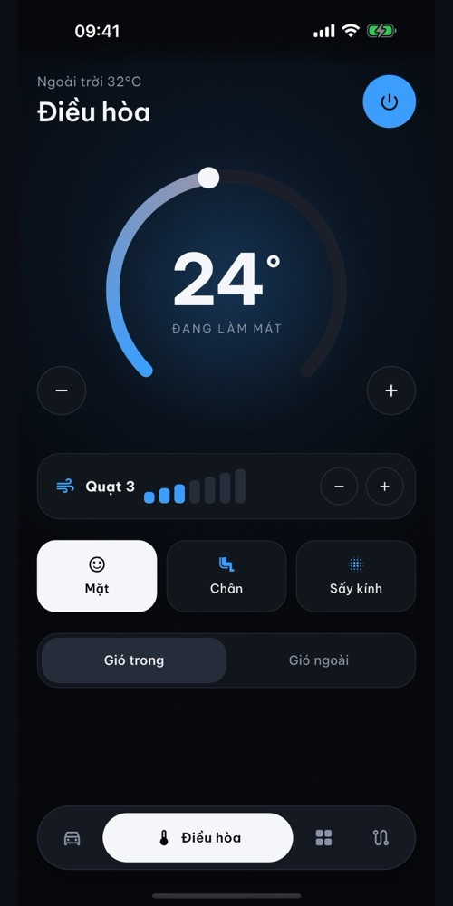
Từ điện thoại sang xe, không cần dây
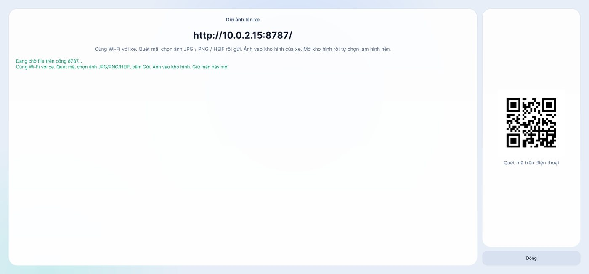
Màn Gửi ảnh lên xe: quét mã QR bằng điện thoại, chọn ảnh và gửi.
- Gửi ảnh qua mã QR: quét mã trên màn xe, chọn ảnh JPG, PNG, HEIF — ảnh vào kho hình của xe, rồi chọn làm hình nền
- Gửi link Google Maps: quét QR hoặc dán link chia sẻ, xe dẫn đường bằng app bản đồ bạn đã chọn
- Báo qua XC Connect: thông báo trên điện thoại khi bắt đầu sạc, sạc xong, sạc bị ngắt và khi quên tắt xe
Cài app lên xe chỉ bằng vài chạm
Kho app riêng của Xe Chơi: app đã thử trên xe, cài ngay từ màn hình, có giọng đọc tiếng Việt cho chỉ đường.
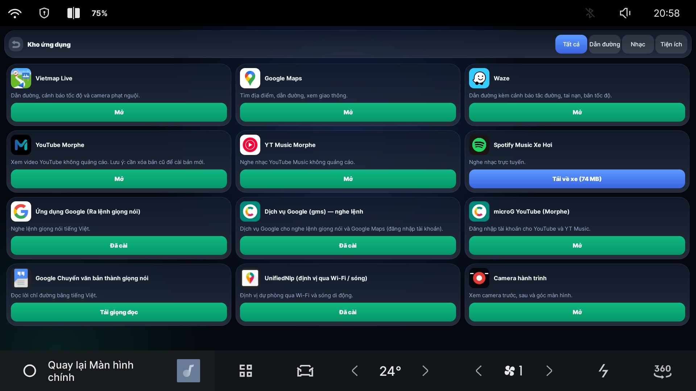
Danh sách app trong kho được cập nhật thường xuyên. Các app của bên thứ ba thuộc về nhà cung cấp tương ứng.
Cập nhật ngay trên xe
Có bản mới, app báo và cập nhật qua OTA — không cần cắm máy tính.
Giữ app luôn chạy
Không để xe tự tắt app khi thu xuống nền; tắt app chạy ngầm khi tắt xe để tiết kiệm tài nguyên.
Gọn gàng ngăn app
Ẩn các app hỗ trợ khỏi ngăn app của xe, chỉ giữ lại những app bạn thực sự dùng.
Câu hỏi thường gặp
Ứng dụng chạy trên xe nào?
Dành riêng cho Geely EX2 bản Việt Nam (màn hình Android 9). Một số tính năng như camera lùi nền tối chỉ có trên bản Pro.
Làm sao để có app trên xe của tôi?
Tham gia nhóm Zalo Xe Chơi. Bạn sẽ được hướng dẫn từng bước để cài app lên màn hình xe, đúng với phiên bản phần mềm xe của bạn.
Có cần Internet không?
Điều khiển xe hoạt động không cần mạng. Kho app, giọng nói qua Google, app điện thoại XC Connect, trụ sạc, bản đồ và cập nhật cần Wi‑Fi — phát từ điện thoại là đủ.
Cài ứng dụng có ảnh hưởng gì đến xe không?
Đây là dự án cộng đồng, không chính thức và không liên kết với Geely. Hãy nhờ nhóm Xe Chơi tư vấn trước khi cài và không thao tác điều khiển xe khi đang chạy nếu chưa chắc chắn về an toàn.
Ứng dụng có tự cập nhật không?
Có. Bản mới được gửi thẳng lên xe; bạn cũng có thể kiểm tra cập nhật trong phần cài đặt của app.
Muốn có EX2 VN Control trên xe của bạn?
Tham gia nhóm Zalo Xe Chơi để được hướng dẫn cài đặt, nhận bản mới và trao đổi cùng cộng đồng chủ xe EX2.